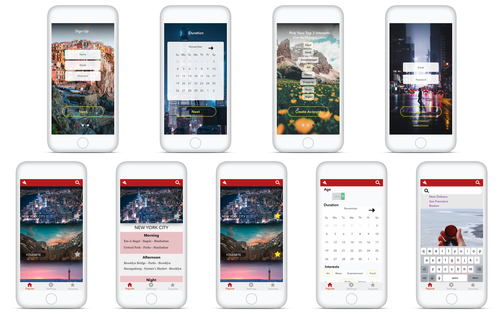

TRAVLR
An app for people who don't like planning

About
TRAVLr is my idea for an app that creates an itinerary for travelers who don't want to plan their trip.
An app for the travelers who are tired of looking up reviews and recommendations.
TRAVLr will take up to 3 different interests and curate an itinerary for that person while also giving the traveler plenty of opportunity for spontaneous free time.
HiFi
I was quite happy with how the high fidelity designs came out.
I chose hero images that took up the whole screens for the sign up pages to inspire the user; to make them actually want to travel.
Traveling is supposed to be about experiencing new places.
I chose ghost buttons so it would not take much away from the images.
Avenir Next was the primary font because it's thin and still looked nice capitalized.

Photos
The choice to use full width images was to showcase scenes from traveling.
Traveling is all about seeing new places and taking in the culture and surrounding areas.
Originally, a grid was going to be used to have more locations on the page.
However, with the photography chosen it is meant to inspire you and to motivate you to travel.


Colors
For whatever reason, color has been my biggest issue while designing.
I think I like a color then I change my mind at least 20 times.
So to solve this issue, I really had to look at the psychology of color.
Red has a sense of urgency and is capabale of capturing attention.
While doing research, I began to notice that red and green are used in a few popular travel apps.
I chose red as the primary color so it will grab the users.
I chose a yellow as the accent color for the buttons because it gave a nice contrast to the backgrounds.
Green is used slightly in the sign up when a form is highlighted.